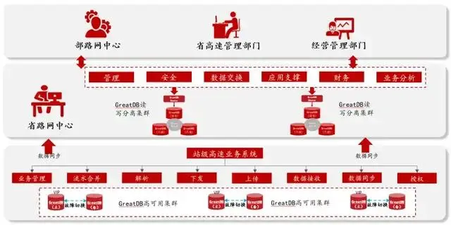
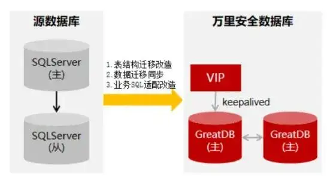

解决方案 | 交通国产化进行时 GreatDB助力高速联网收费系统国产改造
当前，新一轮科技革命和产业变革加速演进，万物互联、产业数字化趋势日益显著。随着新一代信息技术与实体经济深度融合，经济社会运行和人民生产生活对关键信息基础设施的依赖性日益增强，由此引发的网络安全、信息技术安全等问题逐渐为大家所关注，其中的根源在于部分核心技术和设备受制于人。
高速联网收费系统作为国家高速公路的关键基础设施，管理着车流量、出入口流水、PASM卡、工班流水等核心业务数据，是交通领域信息技术应用创新的重中之重。
国家近年来提出了交通强国建设战略，鼓励交通领域加强自主创新，推动产业转型升级，并陆续出台《加快推进高速公路联网收费系统优化升级实施方案》、《高速公路联网收费系统优化升级工程方案》、《交通运输信息技术应用创新适配测评总体要求》等信创相关政策，提出重要软硬件设备国产化采购与应用、加快突破核心技术等要求，大力推动交通行业与信创产业融合发展。
高速联网收费系统，对数据库有哪些需求？
国产兼容度
高速联网收费系统作为国家高速公路的核心业务系统，需响应国家政策号召，实施业务系统全栈国产化。要求新选用的国产数据库必须适配全国产化架构，对国产CPU、服务器、操作系统等拥有优异的兼容性；
迁移便捷度
高速联网收费系统原使用SQL Server数据库，因SQL Server数据库的迁移过程较为复杂，因此客户对SQL Server迁移的便捷度尤为关注，数据库的高效顺畅迁移对业务连续性和数据管理至关重要。如果迁移过程繁琐且耗时，可能导致业务中断、数据丢失，并产生额外成本，对客户造成重大损失；
稳定性
高速联网收费系统涉及企业生产经营，需确保业务系统持续稳定运行。作为提供业务系统底层支撑的数据库软件，要求具备高度的稳定性；
易运维
为降低运维人员工作量，要求数据库拥有完备的配套工具，以便完成数据库的迁移、同步、备份、运维管理等一站式管理工作；
降本增效
当前业务系统底层基础软硬件都采购了国外厂商的产品，受政治因素、采购成本、维护及服务成本较高等因素影响，业务系统存在一定风险，且客户希望在替换数据库的同时，实现降本增效。
主备高可用+读写分离集群
完美实现国产替换目标
高速联网收费系统中，分为站级联网收费系统和省路网中心核心系统。
对于站级联网收费系统，安全数据库GreatDB能提供稳定可靠的主备高可用集群解决方案，完全替代国外主流数据库，具备高可用能力；
对于省路网中心核心系统，安全数据库GreatDB可提供支撑更高并发、性能更稳定的读写分离集群方案。

▲高速联网收费系统架构图具体到数据库国产替代工作，万里数据库技术团队前期针对业务系统应用与原数据库使用情况进行了充分的调研和迁移评估，部署操作系统环境并安装GreatDB集中式数据库，以替换用户现有的SQL Server数据库，实现数据库国产化替换目标。
即使用双节点数据库，搭建单向或双向半同步复制，通常与proxy、keepalived等第三方软件同时使用，不仅可以监控数据库健康状态，还能执行一系列管理命令。如果主库发生故障，切换到备库后仍可继续使用数据库，具备高可用能力。
此外，使用数据迁移工具GreatDTS将全量数据和增量数据从SQL Server迁移到GreatDB集中式数据库，迁移完成后验证数据的完整性和一致性，进行应用联调改造，测试应用程序对数据库的访问。

▲万里数据库GreatDB集中式部署方案方案价值
金融级高可靠
万里安全数据库GreatDB拥有完备的金融级高可靠能力，可以保证高速联网收费系统持续稳定运行；
性能提升显著
通过对高速联网收费系统的业务请求实现读写分离，显著提升了查询性能，为后续业务升级扩容提供了更高并发的处理能力，可以保障系统高效运行；
业务连续性保障
万里安全数据库GreatDB能提供稳定可靠的主备集群高可用方案，实现对高速联网收费系统的业务连续性保障，确保数据库及服务器具备秒级的自动故障转移能力，实现对外服务不停机；
高效运维管理
项目迁移过程中，提供SQL Server到万里安全数据库GreatDB的迁移改造和适配服务，上线后提供原厂运维保障服务，配备多功能、全流程、集成化的运维管理工具GreatADM，有效提升数据库运维管理效率，为用户后续的数据库运维管理保驾护航；
安全自主可控
万里安全数据库GreatDB首批通过国家安全可靠测评，助力高速联网收费系统在数据库方面符合国家的自主可控要求。
高速联网收费系统将国外SQL Server数据库替换为国产的万里安全数据库GreatDB，是国产化浪潮下交通行业的又一生动实践。随着国产化进程推进，国产数据库因其更能贴近国内用户需求、符合国家信创政策、能提供更符合本地业务环境的解决方案，成为国内越来越多用户的更优选择。
未来，万里数据库将投入和汇聚更多产业链资源，以自主可控技术为依托，不断优化数据库产品功能与性能，以更智能、更融合的数据库产品助力高速联网收费系统在内的交通行业各业务系统实现国产替代，全面接入全国“一张网”，为交通强国建设贡献万里力量！